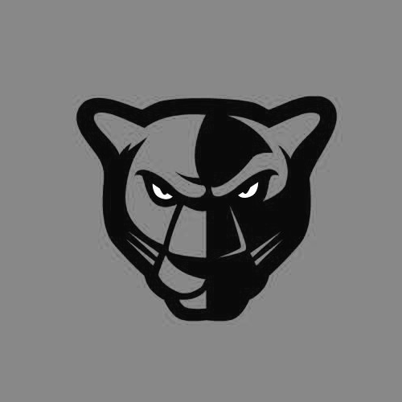
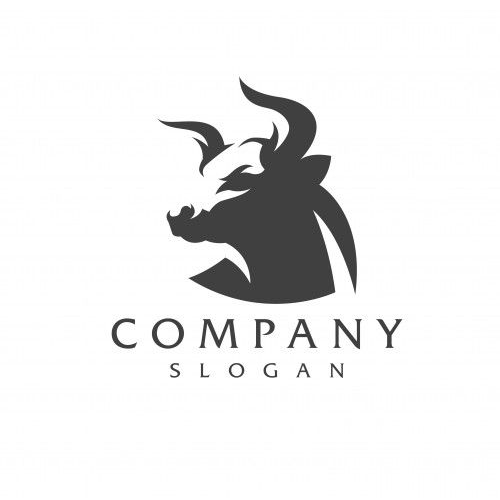
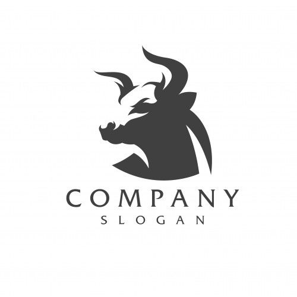
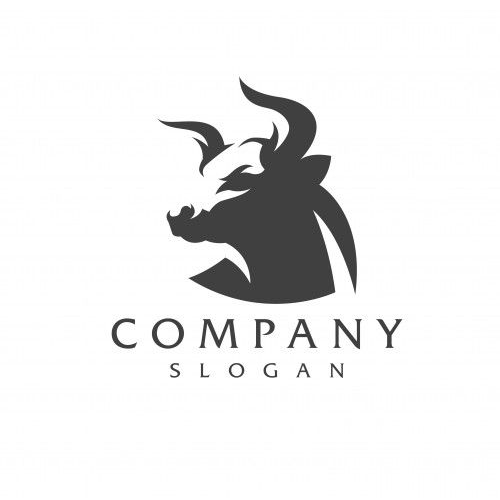

Uma linha contínua
Uma opção de desenho pertinente para logos que usam fontes cursivas.


Menção pertinente
collapse_all expand_all


Formas Geométricas


Linhas com pontas retas


Linhas com pontas afiadas


Totalmente preenchidas
Os contornos podem ser mais realistas, seguir a orientação de arcos de círculos, ou, em vez disso, serem feitos de linhas retas.


Entradas mínimas


Silhuetas com partes "recortadas", "vazadas"
Com esses “recortes” pode-se representar uma parte do animal ou algum outro elemento da imagem como se fosse uma parte inteiramente branca.


Luz numa parte, sombras em outra.


 


Combinação de tendencias
Uma combinação de tendencias é sempre interessante
Combinação com nomes: "logomarcas"
É mais interessante juntar desenho e nome
Artistas perspicazes
Gal Yuri
O designer Gal Yuri usa linhas com pontas afiadas para compor as sombras


Nick Molokovich
Nick Molokovich usa linhas coloridas junto a partes brancas em fundos escuros.